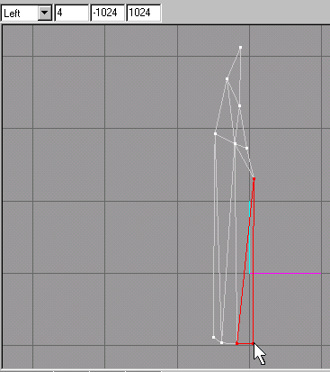
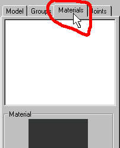
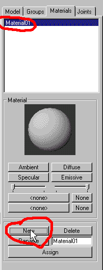

|
|
Our next step will be to create the necessary "Faces" to the knifes left edge. Figure 1.15 shows all the faces completed.

Figure 1.16 Completed faces for the 3rd path
Are you ready for the 4th vertices path yet? This path will follow the left most edge of the knife blade and will not quite be pulled out as far as the 2nd and 3rd paths, but will go a bit further out than the knifes cutting edge. (See Figure 1.17). My guess would be a halfway point between the cutting edge and the thickest part of the blade.

Figure 1.17 Completed 4th path and alignment
Again create the faces necessary. Once you have done this you are ready to create the part that has the name stamped in metal. These vertices should line up with the thickest part of the knifes blade.
Now you should be proud of yourself! you have almost one half of the knife blade done. It will be a simple matter to make the right side of the blade by duplicating it and mirroring this to the Left<->Right. But before we do this to make our task even easier, we will now texture this side of the blade so that when we make the duplicate and mirror it, we will not have to tediously texture map the duplicate.
First you will have to change to the "Material" rollout by clicking on the "Material" tab as shown in figure 1.18. Next you will click on the "New" button as shown on figure 1.19.

Figure 1.18 Changing to the Materials rollout

Figure 1.19 Creating a "New" material
|
|